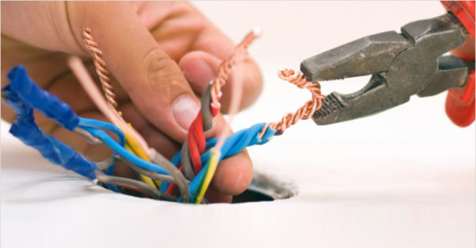
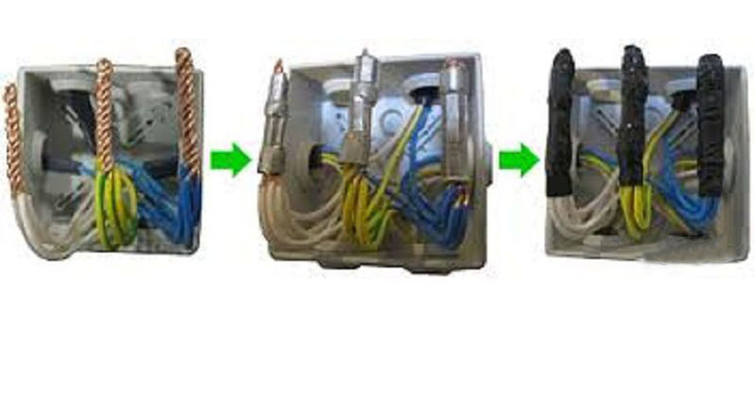
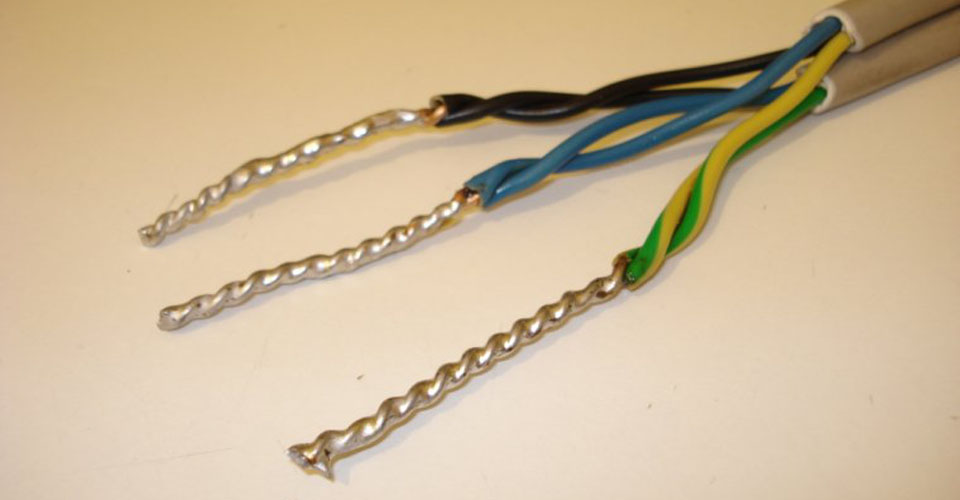
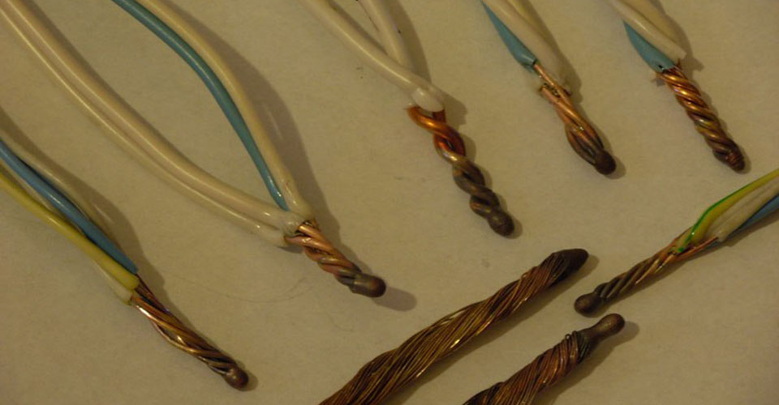
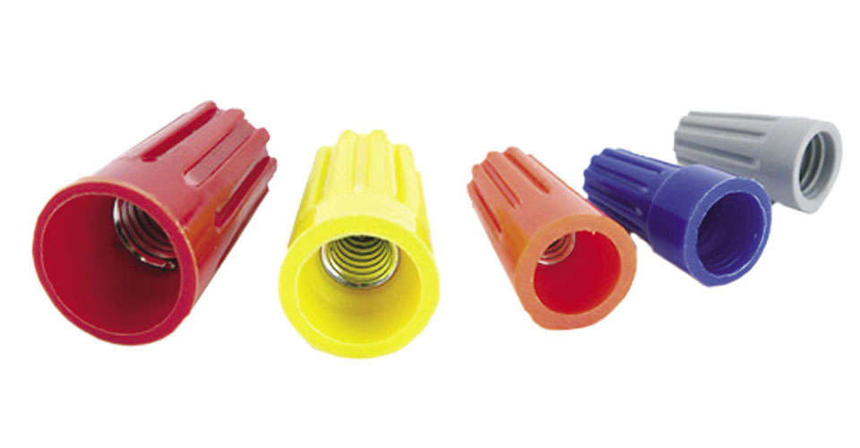
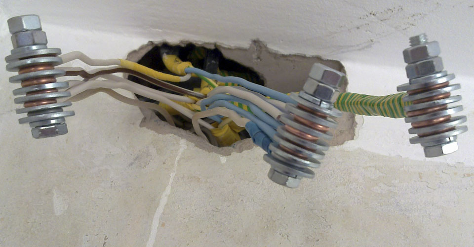
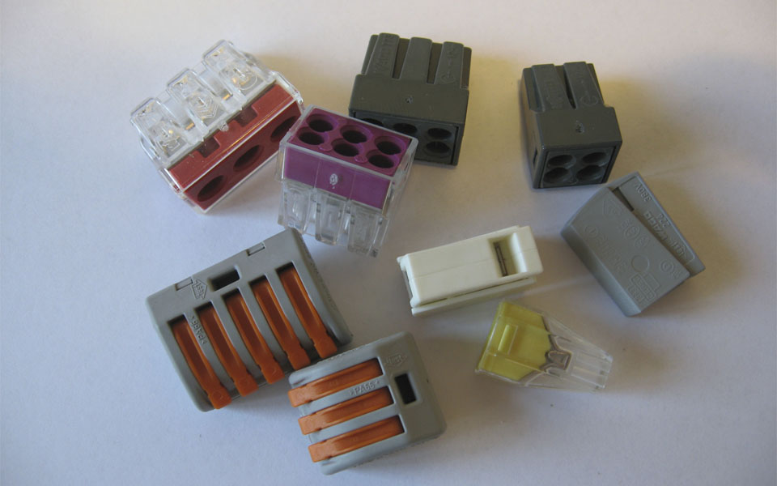

Если посмотреть на электрику, КИП, автоматизацию глобально, то перед нами стоит всего 2 задачи. Это убрать контакт там, где он есть, но не нужен, и сделать контакт там, где его не хватает. Вот в этой статье разберем как раз вторую нашу задачу.
Скрутка- это самый очевидный способ соединения провода. Если нужно соединить 2 кабеля, на ходу, когда нет подручных приспособлений, конечно, проще всего скрутить 2 кабеля и обмотать изолентой. Скручиваются прекрасно как гибкие, так и жесткие провода.
Но есть один очень серьезный нюанс, которым нельзя пренебрегать. Отложим изоленту и откроем ПУЭ.
ПУЭ, п.2.1.21. Соединение, ответвление и оконцевание жил проводов и кабелей должны производиться при помощи опрессовки, сварки, пайки или сжимов (винтовых, болтовых и т.п.) в соответствии с действующими инструкциями, утвержденными в установленном порядке.
Таким образом, скрутка в чистом виде запрещена. Это объясняется очень просто: из-за температурного и линейного расширения, меняется геометрия скрутки, появляются зазоры, металл окисляется и контакт со временем пропадает.
Ну и самое главное, исключаем скрутку медь-алюминий.
Это, пожалуй, самый сложный, медленный, но очень надежный способ соединения. Если соединять кабель не большого сечения на свет или розетки, в распаячной коробке, то прибегать к такому соединению нет смысла.
Для соединения нам потребуется полая гильза из того же материала, что и кабель, и пресс-клещи. Использовать механические обжимки или плоскогубцы не разрешается.
Процесс соединения выглядит так: зачищаем провод от изоляции, далее делаем скрутку, помещаем в заготовленную муфту и обжимаем пресс-клещами. В конце необходимо заизолировать контакт, лучше для этого использовать термоусадочную трубку.
Для муфт большого диаметра, необходимо применять гидравлические пресс
Соединение проводов при помощи пайки, считается одним из самых брутальных и надежных. Пайка гарантирует долговечный контакт с хорошей токопроводимостью. Но и здесь есть нюансы, которые не стоит обходить стороной.
Этот процесс весьма трудоемкий и требует определенных навыков. Для подготовки необходимо завестись: оловянно-свинцовым припоем, флюсом, наждачной бумагой и паяльником. Пайка начинается со снятия изоляции и зачисткой наждачкой провода до блеска. Затем выбираем вид скрутки понадежнее в зависимости от типа провода и как следует пропаиваем контакт. После пайки его необходимо изолировать.
Недостатки пайки: недостаточная механическая прочность, увеличение переходного сопротивления со временем, экологичность, вероятность возникновения химической коррозии из-за остатков флюса. И еще один нюанс пайки: при соединение такого контакта с коммутационным аппаратом, допустимая температура контакта которого больше 300 градусов, приводит к плавлению припоя ПОС. Контакт в таком случае будет потерян.
Такой тип соединения похож на пайку, но более надежен, более трудоемкий и требует аккуратности и не малых навыков. Процесс заключается в следующем: снимаем изоляцию, зачищаем кабель до блеска наждачкой, делаем скрутку и конец ее сплавляем в шарик. После сварки очищаем от флюса и изолируем.
Соединительный изолирующий зажим. Применяется для соединения однопроволочных жестких проводов. Два или несколько проводов соединяются в скрутку, после чего на нее накручивается по часовой стрелке колпачок СИЗ. Такой вид соединения соответствует ПУЭ, помимо этого, он надежен, очень удобен в монтаже и очень экономит время. При монтаже кабелей, где нет большой электрической и механической нагрузке, удобнее всего использовать данный метод. Еще один плюс в сторону СИЗ - это низкая стоимость колпачков в сравнение с быстрозажимными клеммами, сваркой, пайкой и муфтами.
Винтовые соединения один из самых популярных методов соединения, он соответствуют ПУЭ, и может соединять провода из разных металлов. Помимо этого, процесс достаточно быстрый и не дорогой. Но необходимо учитывать, что при соединение алюминиевых проводов, клеммы придется периодически подтягивать, так как алюминия размягчается со временем. И еще один нюанс из опыта- можно очень легко купить дешевые и не качественные винтовые клеммы, в этом случае винт будет постоянно срезать резьбу в самой клемме и в лучшем случае он просто выпадет. А в худшем этого можно не заметить и получить не закрепленный контакт со всеми вытекающими последствиями.
При использование гибких проводов их необходимо сперва обжать наконечником.
Этот вид соединения схож по смыслу с винтовыми клеммами, он так же соответствует ПУЭ, но в отличие от винтового соединения, более громоздкий, дорогой и медленный. Для этого метода необходимы распаячные коробки большего размера и больше изоляции.
Болтом можно соединять сразу несколько проводов, в том числе и медь-алюминий, но обязательно через стальную шайбу.
Говоря о быстрозажимных клеммах, мы, прежде всего, имеем в виду клеммы WAGO (ваги). Это, пожалуй, самый популярный на сегодняшний день способ монтажа. Клеммы очень удобны. Они не требуют специальных навыков, они очень сильно ускоряют монтаж, и они надежны. У "Ваг" очень много разновидностей и серий клемм под разное количество гнезд и сечения проводов. Существуют клеммы для многоразового использования. Некоторые клеммы выпускаются со специальной пастой, которая препятствует окислению алюминия и есть возможность соединять их с медными проводами.
У клемм WAGO есть один недостаток - это высокая стоимость. Помимо этого, необходимо соблюдать номинальный протекаемый ток через клемму, так как в случае его превышения, клемма просто на просто расплавится, и будут плохие последствия.
В этой статье мы рассмотрели основные методы соединения проводов, постарались раскрыть все тонкости, нюансы, плюсы и минусы. Выбор остается за Вами.